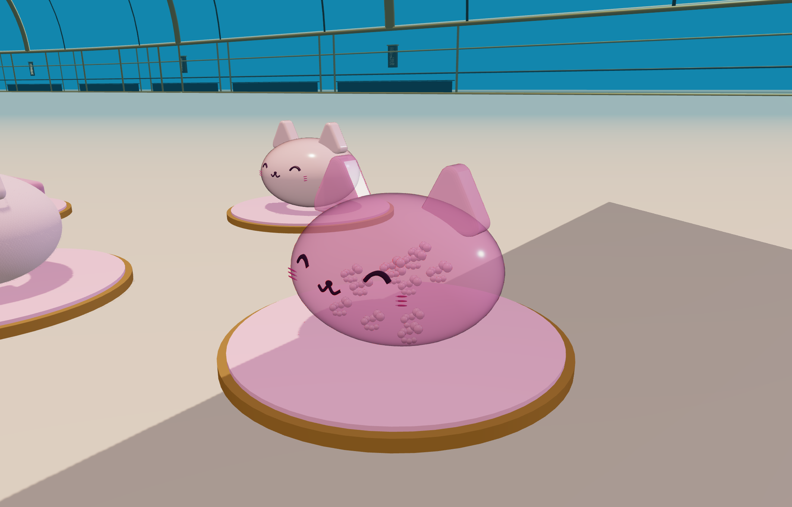

material-crunchy-hold
Reference
Original reference A/B is visible in the user conversation. Original image bytes are not mounted here. This slot is explicitly incomplete; no generated replacement is used.
Actual game
Same-camera state difference

Camera, timestep, material measurements and hash
{
"image": "material-crunchy-hold.png",
"sha256": "a880411ebd8f45f5e35b7ecac5b30108c890607a33e30d1e551a7cf0cfca1e4a",
"size": [
2124,
1360
],
"meanRGB": [
159.51662443225877,
161.0565349091614,
164.28090797053284
],
"metadata": {
"material": "crunchy",
"solver": {
"sleeping": false,
"particles": 343,
"constraints": 3150,
"contacts": 0,
"steps": 180,
"time": 2.9999999999999942,
"volumeRatio": 0.9998927662531112,
"minTetRatio": 0.9886453274422171,
"maxDeformation": 0.020192383906975146,
"maxStrain": 0.012866975368285545,
"damage": 0.3396286964416504,
"faults": 0,
"limitedSteps": 0,
"lastPhysicsMs": 1,
"droppedTime": 0
},
"crunchy": {
"clusters": 12,
"beads": 96,
"energy": 6.480660465882097e-05,
"collisions": 0,
"uploads": 181,
"sleeping": false,
"finite": true
},
"sceneTime": 7,
"reviewHour": 12,
"seed": 4419,
"camera": {
"position": [
3079,
-444.448,
1232
],
"target": [
3072,
-447.96799999999996,
1222
],
"fov": 48,
"aspect": 1.561764705882353,
"near": 0.08,
"far": 20000
},
"objectPosition": [
3072,
-449.948,
1222
],
"renderer": {
"dpr": 2,
"shadow": 1,
"toneMapping": 4,
"info": {
"frame": 8,
"calls": 102,
"triangles": 807526,
"points": 320,
"lines": 0
}
},
"time": 2.9999999999999942
},
"group": "material-crunchy",
"sameCameraAndRenderSettings": true,
"edgeMeanAbsoluteDifference": 0.10337367527048484,
"meanAbsolutePixelDifference": 0.022990749972305307,
"changedPixelFraction": 0.00039118754846571396,
"differenceImage": "material-crunchy-hold-difference.png"
}